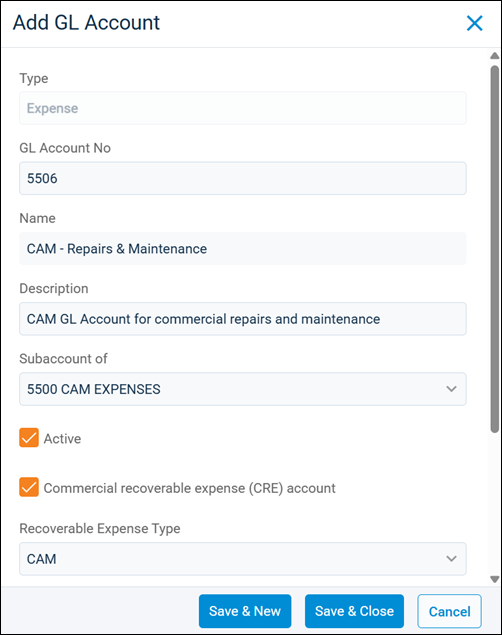
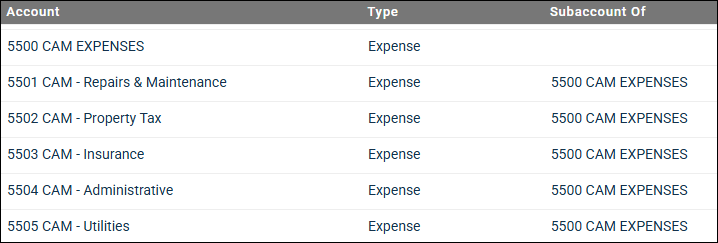

Source: https://rmxhelp.rentmanager.com/Topics/Express/Action/COA-Add-CRE.htm
Add a CRE General Ledger (GL) Account
General ledger (GL) accounts make up the chart of accounts, the backbone of all your finances. These accounts track the financial aspects of your business from income and expenses to liabilities and assets. The chart of accounts is used by every property to support Rent Manager's property-specific accounting, which means each transaction is linked to at least one property. Adding a commercial recoverable expense (CRE) GL account to your chart of accounts allows you to track common area maintenance (CAM) expenses that must be reconciled for your commercial portfolio.
Warning
Please speak with your accountant about the financial implications to ensure this is the best course of action for your business.
Related Privileges
| Group | Privilege | Column |
|---|---|---|
| Accounting | General ledger accounts | Add, View |
For more information, refer to Control User Access.
To add a new CRE GL account, do the following:
-
Go to
 arrow_forward Accounting arrow_forward General arrow_forward Chart of Accounts.
arrow_forward Accounting arrow_forward General arrow_forward Chart of Accounts.
The Chart of Accounts page displays. -
Click
 Add GL Account.
Add GL Account.
-
Enter the following information for the new GL account:
Field Description Active
This option is checked by default, allowing the account to be assigned to transactions for tracking finances linked to this account.
Description
A more detailed summary of the account. This is for internal use and does not display on reports but is useful when determining differences between various GL accounts that are similarly named and numbered.
GL Account No
The unique alphanumeric account number to be used as a system-wide identifier for the new GL account. The next available account number automatically populates based on the Type you select.
More Information
Ensure that the number you select works for the numerical system used by your company's chart of accounts. If you are using Rent Manager's default numerical system, expense accounts use the number range of 5000–6100.
Name
A unique name that matches your real-life account to identify its purpose at a glance. This name displays when expensing this GL account, performing CAM reconciliations, and some reports such as the Balance Sheet and Financial Statement reports.
Subaccount of
If this is a child account of a larger GL account, search for a GL account from the drop-down list to act as the parent for this new account.
In the following example, 5500 CAM Expenses acts as a parent account, with 5501–5505 as subaccounts to specifically track different types of CAM expenses.

Parent accounts act as category headings and it is best practice to not use them to track transactions in Rent Manager. Instead, finances should always be tracked on subaccounts.
Warning
The parent account must be the same GL account type as the child account. If you choose a parent account of a different type, your new account will automatically switch to the parent account's GL account type.
Type
These account types impact your financial reporting and the organization of all financial data. For a CRE GL account, one of the following types must be selected:
-
Expense
-
Other Expense
-
Non-Controllable Expense
-
Non-Operating Expense
-
-
Check the Commercial recoverable expense (CRE) account option to track CAM expenses.
Additional fields specific to CRE display. -
Enter the following information in the new CRE fields:
Field Description Annualized expense during CAM reconciliation
If checked, this expense is calculated separately from non-annualized expenses during CAM reconciliation. This makes it so that commercial tenants pay their pro rata share only for the duration of time they occupied the unit.
For example, consider a scenario where the property tax for your commercial property is billed on a quarterly basis (January 1, April 1, July 1, and October 1) and you have a tenant who moved in on June 4. When you perform a CAM reconciliation for the year, Rent Manager calculates the tenant's pro rata for property tax expenses. Rent Manager then takes into account the percentage of time they occupied the unit and charges (or credits) the tenant for their prorated pro rata share.
Reconcile Type
The charge type used for end-of-period tenant transactions when their portion of the expenses is posted to their account after a CAM reconciliation to balance CRE income and expenses.
Recoverable Expense Type
The type used to classify the GL account totals as either CAM, Tax, Insurance, or Other.
More Information
These categories can also be used to categorize GL account totals into columns of the same name that can be added to the Commercial Rent Roll report using grid view in Rent Manager 12.
Recovery Type
The charge type examined on tenant accounts to determine the charges to be applied to each tenant account.
When a CAM reconciliation is performed, the expenses on this GL account are checked against the charges on tenant accounts with the same charge type as the Recovery Type. The difference between your expenses and these tenant charges helps determine the Reconcile Type charge amount for each tenant.
-
To finish, click Save & Close, or to create additional accounts, click Save & New.
The GL account is added to the Chart of Accounts page and can be used to track finances throughout Rent Manager.